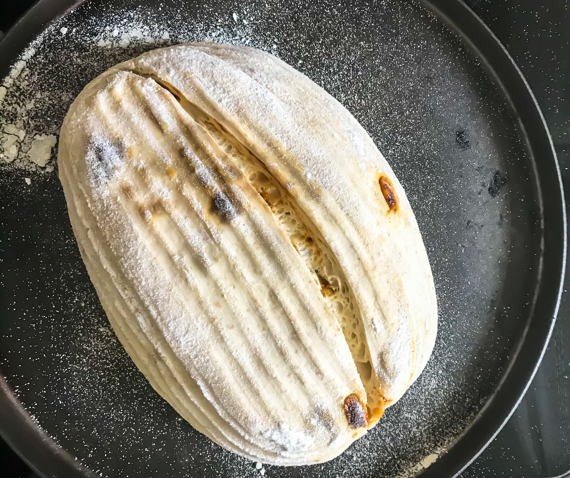

Sourdough
I know what you’re thinking: “Why would someone be obsessed with bread?” The reason why I am so interested in bread is that it supported every civilization throughout history (some more than others), and it tastes a whole lot better than anything you can find in the grocery store. I have spent many years baking and testing bread recipes.
Bread comes from wheat, the crop that is used to make flour. Wheat is ground into a fine flour, mixed with water, left to rise/ferment, then baked to create what we know of as bread.
Different Types of Bread
Bread comes in many different forms: white, wheat, barley, rye, sourdough, etc.
Each of these has many different subcategories: sandwich bread, flatbread, rolls, buns, etc.
To make bread rise, bakers will often use yeast. Yeast is an organism that digests some of the flour, which comes out their other end as gas (carbon dioxide) and liquid (usually ethanol, acetic acid, and lactic acid). The carbon dioxide aerates this mixture, while the liquid creates a moist and tangy bread. Yeast makes the bread fluffier and easier to eat, as well as more flavorful.
Sourdough
The type of bread I like most is sourdough. The term “sourdough” refers to the process of fermenting a flour and water mixture, by virtue of yeast, into a “starter” mixture which can make any kind of bread taste better.
Sourdough dates back as early as 4,000 BCE, where Egyptian texts talk of using fermented fruit juices and fermented wheat porridge to flavor bread.
The “sour” part of sourdough comes from allowing the yeast to digest the flour and water over a long period of time, giving off more waste products, which in turn, gives it a more sour taste.
I started making sourdough bread a few years ago, and before that, just regular bread. Making bread at home can not only save money, but also be healthier than store bought bread, as you can control exactly what you put into the bread. After lots of practice, the bread you make can taste better than anything you find at the store.